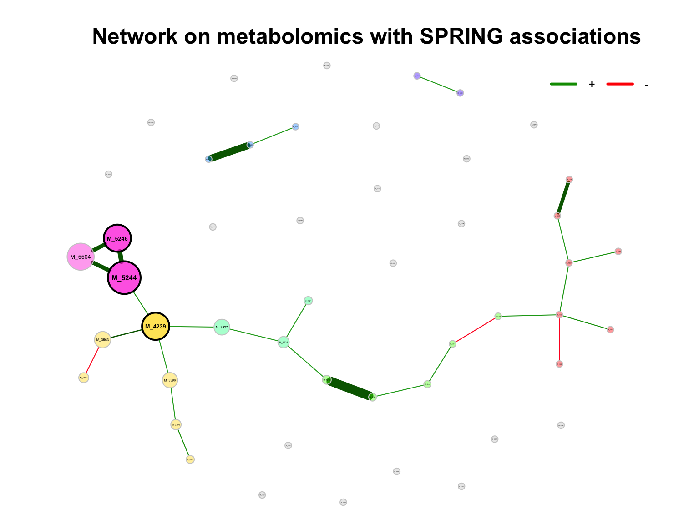
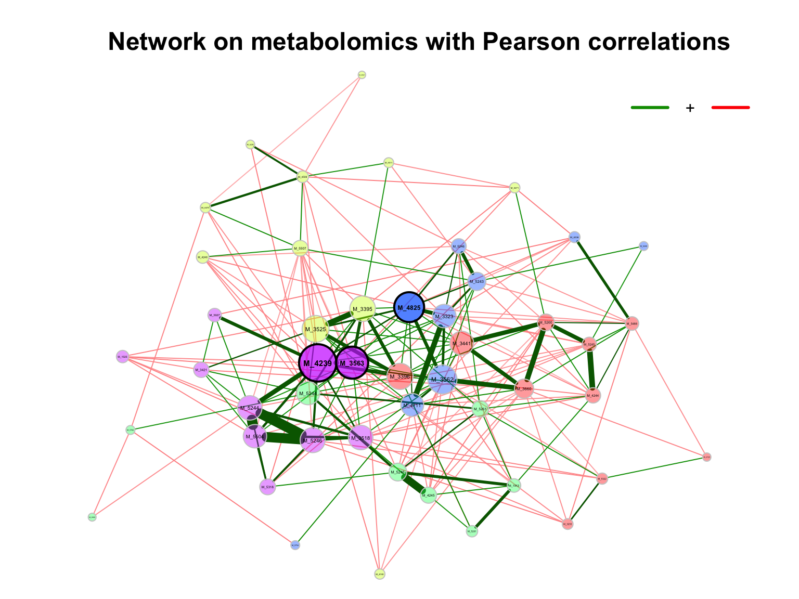
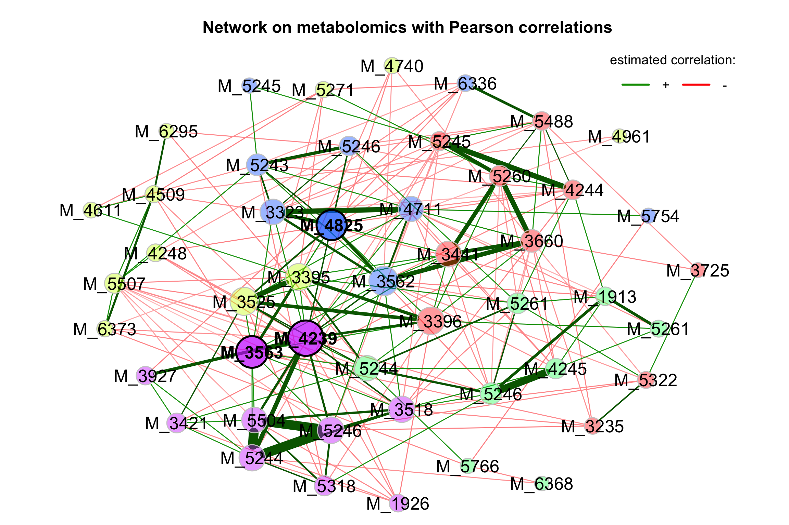
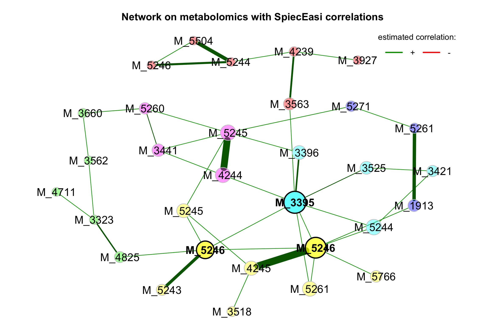
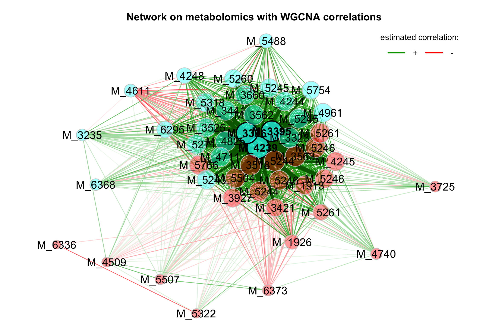
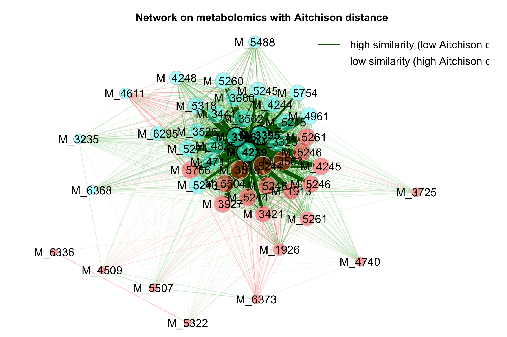
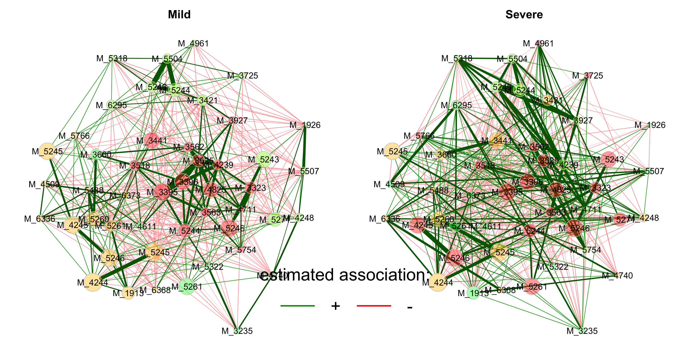

Chapter 7 Network Analysis
7.1 Introduction
Estimating microbial association networks from high-throughput sequencing data is a common exploratory data analysis approach aiming at understanding the complex interplay of microbial communities in their natural habitat. Statistical network estimation workflows comprise several analysis steps, including methods for zero handling, data normalization and computing microbial associations. Since microbial interactions are likely to change between conditions, e.g. between healthy individuals and patients, identifying network differences between groups is often an integral secondary analysis step.
NetCoMi (Network Construction and Comparison for Microbiome Data) (Peschel et al. 2021) provides functionality for constructing, analyzing, and comparing networks suitable for the application on microbial compositional data.
The following information is from NetCoMi github.
Association measures:
- Pearson coefficient
(
cor()fromstatspackage) - Spearman coefficient
(
cor()fromstatspackage) - Biweight Midcorrelation
bicor()fromWGCNApackage - SparCC
(
sparcc()fromSpiecEasipackage) - CCLasso (R code on GitHub)
- CCREPE
(
ccrepepackage) - SpiecEasi (
SpiecEasipackage) - SPRING (
SPRINGpackage) - gCoda (R code on GitHub)
- propr
(
proprpackage)
Dissimilarity measures:
- Euclidean distance
(
vegdist()fromveganpackage) - Bray-Curtis dissimilarity
(
vegdist()fromveganpackage) - Kullback-Leibler divergence (KLD)
(
KLD()fromLaplacesDemonpackage) - Jeffrey divergence (own code using
KLD()fromLaplacesDemonpackage) - Jensen-Shannon divergence (own code using
KLD()fromLaplacesDemonpackage) - Compositional KLD (own implementation following \[Martín-Fernández et al., 1999\])
- Aitchison distance
(
vegdist()andclr()fromSpiecEasipackage)
Methods for zero replacement:
- Adding a predefined pseudo count
- Multiplicative replacement
(
multReplfromzCompositionspackage) - Modified EM alr-algorithm
(
lrEMfromzCompositionspackage) - Bayesian-multiplicative replacement
(
cmultReplfromzCompositionspackage)
Normalization methods:
- Total Sum Scaling (TSS) (own implementation)
- Cumulative Sum Scaling (CSS) (
cumNormMatfrommetagenomeSeqpackage) - Common Sum Scaling (COM) (own implementation)
- Rarefying (
rrarefyfromveganpackage) - Variance Stabilizing Transformation (VST)
(
varianceStabilizingTransformationfromDESeq2package) - Centered log-ratio (clr) transformation
(
clr()fromSpiecEasipackage))
TSS, CSS, COM, VST, and the clr transformation are described in \[Badri et al., 2020\].
7.2 Loading packages
knitr::opts_chunk$set(warning = F)
library(dplyr)
library(tibble)
library(POMA)
library(ggplot2)
library(ggraph)
library(plotly)
library(SummarizedExperiment)
# installing package
# devtools::install_github("stefpeschel/NetCoMi",
# dependencies = c("Depends", "Imports", "LinkingTo"),
# repos = c("https://cloud.r-project.org/",
# BiocManager::repositories()))
# devtools::install_github("GraceYoon/SPRING", force = TRUE)
# devtools::install_github("zdk123/SpiecEasi", force = TRUE)
library(NetCoMi)
library(SPRING)
library(SpiecEasi)
# rm(list = ls())
options(stringsAsFactors = F)
options(future.globals.maxSize = 1000 * 1024^2)7.3 Importing data
The input data sets are from the previous chapter.
se_filter <- readRDS("./dataset/POMA/se_filter.RDS")7.4 Data curation
features_tab <- SummarizedExperiment::assay(se_filter) %>%
t()
features_tab[is.na(features_tab)] <- 0
head(features_tab)## M_52603 M_19130 M_39270 M_35186 M_34214 M_49617 M_52710 M_53189 M_34419 M_36600 M_54885 M_32350
## P101001 94392176 25632184 959249.2 8141286 8284910 381540.1 47739292 392911.0 306346432 9887348 298886.1 627613.7
## P101004 115155104 25106562 785895.0 4303854 7923489 588488.2 43678784 300383.9 263333424 9703074 356274.3 339586.8
## P101007 79582632 31371314 1903592.4 7129884 9211485 464548.8 53975068 539361.5 191261648 6431966 393623.0 662555.6
## P101009 118408760 27787270 863701.9 5394354 8559147 497342.0 47619564 487186.2 232171184 11914472 599783.6 492430.9
## P101010 92508664 26685844 1177860.8 6270727 7623603 457409.1 61906028 236719.5 183104336 9366287 280123.8 373484.2
## P101011 94076424 27780988 638271.3 4292087 6074633 238781.8 40534280 279118.7 164623888 6003700 349482.3 608671.7
## M_55041 M_48258 M_35628 M_33230 M_52462 M_52464 M_52454 M_52610 M_42446 M_52461 M_52616 M_33955
## P101001 3655240 181136336 6548460 19098412 486910976 6794782 274026048 206279104 712253440 486655872 12365879 448634784
## P101004 1637351 115752200 3455001 10641834 380887616 4090405 282066016 253920496 807180352 439253152 10655923 413690720
## P101007 7284474 102036920 3640571 14977371 515795264 13183206 309709728 316142400 715500800 448578400 14010174 368849632
## P101009 3065707 118663320 5087503 13575508 390977568 7596680 325723168 232534688 742576768 473622240 14814230 365712768
## P101010 2493687 154183360 5244878 19464998 478479936 5395172 382690720 262177072 642967424 647036736 12873290 376101984
## P101011 2653816 76137216 2238570 8797510 420938976 4854076 261022832 264648720 728199680 378921056 13152187 348108832
## M_35631 M_42450 M_52447 M_52449 M_52452 M_52438 M_33961 M_42398 M_47403 M_57547 M_19266 M_63739
## P101001 4035864 358896736 30252208 43173148 510461472 181406848 191147264 6137137 209255.5 169297.7 176944.80 761146.2
## P101004 3446139 282910752 19424238 30030992 573170816 122556968 166379712 5143481 220424.3 426227.5 0.00 549097.4
## P101007 3764448 404918560 57376512 50766284 588643712 181572112 189915296 7412535 369675.0 561078.5 385203.22 792883.2
## P101009 3444159 298822048 26429340 43420376 631965888 208484000 186599152 5421984 172995.7 457043.3 0.00 727360.0
## P101010 3276579 373251712 21732290 43622724 590247424 306379392 217632736 5767624 168503.4 602024.4 0.00 913964.4
## P101011 2364665 335196864 21960100 39447380 560182336 136970272 170865408 3588338 375137.6 304329.9 90888.59 1609550.0
## M_57663 M_42489 M_37253 M_45095 M_53229 M_55072 M_47118 M_35253 M_46115 M_62952 M_63681 M_63361
## P101001 719237.9 2865827 411578.0 751527.3 768160.4 488544.9 281162.7 27446600 1578011.4 5104806 434480.3 2540280
## P101004 364556.1 1546570 425030.0 378033.7 953194.9 653107.0 362380.0 28088842 440408.7 3084011 373229.5 2165454
## P101007 500680.8 1403190 742298.0 589506.3 1619436.8 522721.5 482046.2 21613430 794592.2 4728273 400386.6 2231037
## P101009 523549.1 1653830 466825.0 503910.2 877530.2 873616.8 619943.9 28872470 671497.6 4140767 301840.8 0
## P101010 455201.1 1007203 232876.0 489013.9 993923.4 864624.8 677774.7 25375946 1133763.9 2434359 548330.4 1125607
## P101011 449288.0 1818438 651777.4 785751.6 1092817.9 1360312.8 208040.6 17388928 1635119.5 5722723 344799.8 07.5 Single network with SPRING as association measure
InputData: numeric matrix. Can be a count matrix (rows are samples, columns are Features).
Filtered criterion:
Only samples with a total number of reads of at least 1000 are included (argument filtSamp).
Only the 50 taxa with highest frequency are included (argument filtTax).
Method to compute the associations between features (argument measure).
Normalization method:
normMethod: none.
zeroMethod: none.
sparsMethod: none.
7.5.1 Building network model
net_single <- netConstruct(features_tab,
filtTax = "highestFreq",
filtTaxPar = list(highestFreq = 50),
filtSamp = "totalReads",
filtSampPar = list(totalReads = 100),
measure = "spring",
measurePar = list(nlambda = 10,
rep.num = 10),
normMethod = "none",
zeroMethod = "none",
sparsMethod = "none",
dissFunc = "signed",
verbose = 3,
seed = 123)## The input is identified as the covariance matrix.
## Conducting Meinshausen & Buhlmann graph estimation (mb)....done
## The input is identified as the covariance matrix.
## Conducting Meinshausen & Buhlmann graph estimation (mb)....done
## The input is identified as the covariance matrix.
## Conducting Meinshausen & Buhlmann graph estimation (mb)....done
## The input is identified as the covariance matrix.
## Conducting Meinshausen & Buhlmann graph estimation (mb)....done
## The input is identified as the covariance matrix.
## Conducting Meinshausen & Buhlmann graph estimation (mb)....done
## The input is identified as the covariance matrix.
## Conducting Meinshausen & Buhlmann graph estimation (mb)....done
## The input is identified as the covariance matrix.
## Conducting Meinshausen & Buhlmann graph estimation (mb)....done
## The input is identified as the covariance matrix.
## Conducting Meinshausen & Buhlmann graph estimation (mb)....done
## The input is identified as the covariance matrix.
## Conducting Meinshausen & Buhlmann graph estimation (mb)....done
## The input is identified as the covariance matrix.
## Conducting Meinshausen & Buhlmann graph estimation (mb)....done
## The input is identified as the covariance matrix.
## Conducting Meinshausen & Buhlmann graph estimation (mb)....done7.5.2 Analyzing the constructed network
props_single <- netAnalyze(net_single,
centrLCC = TRUE,
clustMethod = "cluster_fast_greedy",
hubPar = "eigenvector",
weightDeg = FALSE,
normDeg = FALSE)
#?summary.microNetProps
summary(props_single, numbNodes = 5L)##
## Component sizes
## ```````````````
## size: 24 3 2 1
## #: 1 1 1 19
## ______________________________
## Global network properties
## `````````````````````````
## Largest connected component (LCC):
##
## Relative LCC size 0.50000
## Clustering coefficient 0.13809
## Modularity 0.61719
## Positive edge percentage 87.50000
## Edge density 0.08696
## Natural connectivity 0.05294
## Vertex connectivity 1.00000
## Edge connectivity 1.00000
## Average dissimilarity* 0.97231
## Average path length** 4.17479
##
## Whole network:
##
## Number of components 22.00000
## Clustering coefficient 0.13042
## Modularity 0.67421
## Positive edge percentage 88.88889
## Edge density 0.02394
## Natural connectivity 0.02400
##
## *Dissimilarity = 1 - edge weight
## **Path length: Units with average dissimilarity
##
## ______________________________
## Clusters
## - In the whole network
## - Algorithm: cluster_fast_greedy
## ````````````````````````````````
##
## name: 0 1 2 3 4 5 6 7
## #: 19 7 6 5 3 3 2 3
##
## ______________________________
## Hubs
## - In alphabetical/numerical order
## - Based on empirical quantiles of centralities
## ```````````````````````````````````````````````
## M_42398
## M_52447
## M_52464
##
## ______________________________
## Centrality measures
## - In decreasing order
## - Centrality of disconnected components is zero
## ````````````````````````````````````````````````
## Degree (unnormalized):
##
## M_36600 4
## M_42398 4
## M_52603 3
## M_52447 3
## M_19266 3
##
## Betweenness centrality (normalized):
##
## M_19266 0.56126
## M_42398 0.55731
## M_42450 0.52174
## M_52462 0.51383
## M_39270 0.49802
##
## Closeness centrality (normalized):
##
## M_42398 0.55454
## M_36600 0.49039
## M_19266 0.48425
## M_39270 0.48005
## M_52447 0.47460
##
## Eigenvector centrality (normalized):
##
## M_52447 1.00000
## M_42398 0.79014
## M_52464 0.78767
## M_55041 0.78469
## M_35631 0.375197.5.3 Visualizing the network
p <- plot(props_single,
nodeColor = "cluster",
nodeSize = "eigenvector",
title1 = "Network on metabolomics with SPRING associations",
showTitle = TRUE,
cexTitle = 1.5)
legend(0.7, 1.1, cex = 0.8, title = "estimated association:",
legend = c("+","-"), lty = 1, lwd = 3, col = c("#009900","red"),
bty = "n", horiz = TRUE)
Note that edge weights are (non-negative) similarities, however, the edges belonging to negative estimated associations are colored in red by default (negDiffCol = TRUE).
7.6 Single network with Pearson correlation as association measure
Since Pearson correlations may lead to compositional effects when applied to sequencing data, we use the clr transformation as normalization method. Zero treatment is necessary in this case.
A threshold of 0.3 is used as sparsification method, so that only OTUs with an absolute correlation greater than or equal to 0.3 are connected.
7.6.1 Building network model
net_single2 <- netConstruct(features_tab,
measure = "pearson",
normMethod = "clr",
zeroMethod = "multRepl",
sparsMethod = "threshold",
thresh = 0.3,
verbose = 3,
seed = 123)7.6.2 Visualizing the network
- primary plot
props_single2 <- netAnalyze(net_single2, clustMethod = "cluster_fast_greedy")
plot(props_single2,
nodeColor = "cluster",
nodeSize = "eigenvector",
title1 = "Network on metabolomics with Pearson correlations",
showTitle = TRUE,
cexTitle = 1.5)
legend(0.7, 1.1, cex = 1, title = "estimated correlation:",
legend = c("+","-"), lty = 1, lwd = 3, col = c("#009900","red"),
bty = "n", horiz = TRUE)
improve the visualization by changing the following arguments:
repulsion = 0.8: Place the nodes further apartrmSingles = TRUE: Single nodes are removedlabelScale = FALSEandcexLabels = 1.6: All labels have equal size and are enlarged to improve readability of small node’s labelsnodeSizeSpread = 3(default is 4): Node sizes are more similar if the value is decreased. This argument (in combination withcexNodes) is useful to enlarge small nodes while keeping the size of big nodes.
plot(props_single2,
nodeColor = "cluster",
nodeSize = "eigenvector",
repulsion = 0.8,
rmSingles = TRUE,
labelScale = FALSE,
cexLabels = 1.6,
nodeSizeSpread = 3,
cexNodes = 2,
title1 = "Network on metabolomics with Pearson correlations",
showTitle = TRUE,
cexTitle = 1.5)
legend(0.7, 1.1, cex = 1.2, title = "estimated correlation:",
legend = c("+","-"), lty = 1, lwd = 3, col = c("#009900","red"),
bty = "n", horiz = TRUE)
7.7 Single network with SpiecEasi correlation as association measure
Only the 50 features with highest variance are selected.
Only samples with a total number of reads of at least 100 included.
7.7.1 Building network model
net_single3 <- netConstruct(features_tab,
measure = "spieceasi",
measurePar = list(method = "mb",
pulsar.params = list(rep.num = 10),
symBetaMode = "ave"),
filtTax = "highestVar",
filtTaxPar = list(highestVar = 50),
filtSamp = "totalReads",
filtSampPar = list(totalReads = 100),
verbose = 3,
seed = 123)7.7.2 Visualizing the network
props_single3 <- netAnalyze(net_single3, clustMethod = "cluster_fast_greedy")
plot(props_single3,
nodeColor = "cluster",
nodeSize = "eigenvector",
repulsion = 0.8,
rmSingles = TRUE,
labelScale = FALSE,
cexLabels = 1.6,
nodeSizeSpread = 3,
cexNodes = 2,
title1 = "Network on metabolomics with SpiecEasi correlations",
showTitle = TRUE,
cexTitle = 1.5)
legend(0.7, 1.1, cex = 1.2, title = "estimated correlation:",
legend = c("+","-"), lty = 1, lwd = 3, col = c("#009900","red"),
bty = "n", horiz = TRUE)
7.8 Single network with WGCNA (bicor) as association measure
Biweight Midcorrelation bicor() from WGCNA package.
7.8.1 Building network model
net_single4 <- netConstruct(features_tab,
measure = "bicor",
measurePar = list(use = "all.obs",
maxPOutliers = 1,
nThreads = 2),
filtTax = "highestVar",
filtTaxPar = list(highestVar = 50),
filtSamp = "totalReads",
filtSampPar = list(totalReads = 100),
dissFunc = "TOMdiss",
verbose = 3)## ..will use 2 parallel threads.
## Fraction of slow calculations: 0.0000007.8.2 Visualizing the network
props_single4 <- netAnalyze(net_single4, clustMethod = "cluster_fast_greedy")
plot(props_single4,
nodeColor = "cluster",
nodeSize = "eigenvector",
repulsion = 0.8,
rmSingles = TRUE,
labelScale = FALSE,
cexLabels = 1.6,
nodeSizeSpread = 3,
cexNodes = 2,
title1 = "Network on metabolomics with WGCNA correlations",
showTitle = TRUE,
cexTitle = 1.5)
legend(0.7, 1.1, cex = 1.2, title = "estimated correlation:",
legend = c("+","-"), lty = 1, lwd = 3, col = c("#009900","red"),
bty = "n", horiz = TRUE)
7.9 Single network with sparcc correlation as association measure
Only the 40 features with highest variance are selected.
Only samples with a total number of reads of at least 100 included.
7.9.1 Building network model
net_single5 <- netConstruct(features_tab,
measure = "sparcc",
measurePar = list(iter = 20,
inner_iter = 10,
th = 0.1),
filtTax = "highestVar",
filtTaxPar = list(highestVar = 50),
filtSamp = "totalReads",
filtSampPar = list(totalReads = 100),
verbose = 3,
seed = 123)7.9.2 Visualizing the network
props_single5 <- netAnalyze(net_single5, clustMethod = "cluster_fast_greedy")
plot(props_single5,
nodeColor = "cluster",
nodeSize = "eigenvector",
repulsion = 0.8,
rmSingles = TRUE,
labelScale = FALSE,
cexLabels = 1.6,
nodeSizeSpread = 3,
cexNodes = 2,
title1 = "Network on metabolomics with sparcc correlations",
showTitle = TRUE,
cexTitle = 1.5)
legend(0.7, 1.1, cex = 1.2, title = "estimated correlation:",
legend = c("+","-"), lty = 1, lwd = 3, col = c("#009900","red"),
bty = "n", horiz = TRUE)
7.10 Dissimilarity-based Networks
If a dissimilarity measure is used for network construction, nodes are subjects instead of OTUs. The estimated dissimilarities are transformed into similarities, which are used as edge weights so that subjects with a similar microbial composition are placed close together in the network plot.
We construct a single network using Aitchison’s distance being suitable for the application on compositional data.
Since the Aitchison distance is based on the clr-transformation, zeros in the data need to be replaced.
The network is sparsified using the k-nearest neighbor (knn) algorithm.
net_aitchison <- netConstruct(features_tab,
measure = "aitchison",
zeroMethod = "multRepl",
sparsMethod = "knn",
kNeighbor = 3,
verbose = 3)7.10.1 Visualizing the network
props_aitchison <- netAnalyze(net_aitchison,
clustMethod = "hierarchical",
clustPar = list(method = "average", k = 3),
hubPar = "eigenvector")
plot(props_single4,
nodeColor = "cluster",
nodeSize = "eigenvector",
repulsion = 0.8,
rmSingles = TRUE,
labelScale = FALSE,
cexLabels = 1.6,
nodeSizeSpread = 3,
cexNodes = 1.5,
title1 = "Network on metabolomics with Aitchison distance",
showTitle = TRUE,
cexTitle = 1.5,
hubTransp = 50,
edgeTranspLow = 60,
charToRm = "00000",
mar = c(1, 3, 3, 5))
# plot(props_aitchison,
# nodeColor = "cluster",
# nodeSize = "eigenvector",
# hubTransp = 50,
# edgeTranspLow = 60,
# charToRm = "00000",
# mar = c(1, 3, 3, 5))
# get green color with 50% transparency
green2 <- colToTransp("#009900", 40)
legend(0.4, 1.1,
cex = 1.5,
legend = c("high similarity (low Aitchison distance)",
"low similarity (high Aitchison distance)"),
lty = 1,
lwd = c(3, 1),
col = c("darkgreen", green2),
bty = "n")
7.11 Network comparison
Comparing two networks by NetCoMi.
7.11.1 Data preparing
group_names <- c("Mild", "Severe")
se_filter_subset <- se_filter[, se_filter$group %in% group_names]
se_filter_subset$group <- factor(as.character(se_filter_subset$group))
features_tab <- SummarizedExperiment::assay(se_filter_subset) %>%
t()
features_tab[is.na(features_tab)] <- 0
group_vector <- se_filter_subset$group7.11.2 Building network model
net_group <- netConstruct(features_tab,
group = group_vector,
measure = "pearson",
normMethod = "clr",
zeroMethod = "multRepl",
sparsMethod = "threshold",
thresh = 0.3,
verbose = 3,
seed = 123)7.11.3 Network analysis
props_group <- netAnalyze(net_group,
centrLCC = FALSE,
avDissIgnoreInf = TRUE,
sPathNorm = FALSE,
clustMethod = "cluster_fast_greedy",
hubPar = c("degree", "between", "closeness"),
hubQuant = 0.9,
lnormFit = TRUE,
normDeg = FALSE,
normBetw = FALSE,
normClose = FALSE,
normEigen = FALSE)
summary(props_group)##
## Component sizes
## ```````````````
## Group 1:
## size: 48
## #: 1
##
## Group 2:
## size: 48
## #: 1
## ______________________________
## Global network properties
## `````````````````````````
## group '1' group '2'
## Number of components 1.00000 1.00000
## Clustering coefficient 0.50151 0.48747
## Modularity 0.15580 0.08807
## Positive edge percentage 51.11607 49.24078
## Edge density 0.39716 0.40869
## Natural connectivity 0.09563 0.08721
## Vertex connectivity 9.00000 7.00000
## Edge connectivity 9.00000 7.00000
## Average dissimilarity* 0.67288 0.68152
## Average path length** 0.92286 0.91581
##
## *Dissimilarity = 1 - edge weight
## **Path length: Sum of dissimilarities along the path
##
## ______________________________
## Clusters
## - In the whole network
## - Algorithm: cluster_fast_greedy
## ````````````````````````````````
## group '1':
## name: 1 2 3 4
## #: 6 15 14 13
##
## group '2':
## name: 1 2 3 4
## #: 18 10 12 8
##
## ______________________________
## Hubs
## - In alphabetical/numerical order
## - Based on log-normal quantiles of centralities
## ```````````````````````````````````````````````
## No hubs detected.
## ______________________________
## Centrality measures
## - In decreasing order
## - Computed for the complete network
## ````````````````````````````````````
## Degree (unnormalized):
## group '1' group '2'
## M_48258 29 19
## M_42398 26 25
## M_47118 26 27
## M_35186 25 22
## M_55072 24 21
## ______ ______
## M_47118 26 27
## M_19130 14 26
## M_42446 18 26
## M_33230 22 25
## M_52452 23 25
##
## Betweenness centrality (unnormalized):
## group '1' group '2'
## M_35186 51 5
## M_42450 31 27
## M_52452 31 18
## M_42398 31 20
## M_35253 31 5
## ______ ______
## M_19130 5 34
## M_33230 3 32
## M_63361 5 31
## M_53189 7 27
## M_42450 31 27
##
## Closeness centrality (unnormalized):
## group '1' group '2'
## M_35253 71.79398 51.58148
## M_42398 70.9484 63.74822
## M_33961 68.32261 55.35701
## M_48258 67.49245 61.7771
## M_33955 66.93392 57.32211
## ______ ______
## M_52447 63.54214 66.40753
## M_52464 62.24541 65.07936
## M_33230 62.53671 63.84338
## M_42398 70.9484 63.74822
## M_47118 64.7125 63.10391
##
## Eigenvector centrality (unnormalized):
## group '1' group '2'
## M_42398 0.26682 0.21086
## M_35253 0.26167 0.08052
## M_48258 0.25696 0.1782
## M_35186 0.23664 0.20434
## M_33961 0.23245 0.11227
## ______ ______
## M_33230 0.18321 0.21563
## M_47118 0.20899 0.21435
## M_42398 0.26682 0.21086
## M_35186 0.23664 0.20434
## M_52447 0.13304 0.186047.11.4 Visualizing the network
plot(props_group,
sameLayout = TRUE,
layoutGroup = 1,
rmSingles = "inboth",
nodeSize = "mclr",
labelScale = FALSE,
cexNodes = 1,
cexLabels = 1.5,
cexHubLabels = 2,
cexTitle = 2,
groupNames = group_names,
hubBorderCol = "gray40")
legend("bottom", title = "estimated association:", legend = c("+", "-"),
col = c("#009900","red"), inset = 0.04, cex = 3, lty = 1, lwd = 4,
bty = "n", horiz = TRUE)
7.11.5 Quantitative network comparison
comp_group <- netCompare(props_group, permTest = FALSE, verbose = FALSE)
summary(comp_group,
groupNames = group_names,
showCentr = c("degree", "between", "closeness"),
numbNodes = 5)##
## Comparison of Network Properties
## ----------------------------------
## CALL:
## netCompare(x = props_group, permTest = FALSE, verbose = FALSE)
##
## ______________________________
## Global network properties
## `````````````````````````
## Mild Severe difference
## Number of components 1.000 1.000 0.000
## Clustering coefficient 0.502 0.487 0.014
## Moduarity 0.156 0.088 0.068
## Positive edge percentage 51.116 49.241 1.875
## Edge density 0.397 0.409 0.012
## Natural connectivity 0.096 0.087 0.008
## Vertex connectivity 9.000 7.000 2.000
## Edge connectivity 9.000 7.000 2.000
## Average dissimilarity* 0.673 0.682 0.009
## Average path length** 0.923 0.916 0.007
## -----
## *: Dissimilarity = 1 - edge weight
## **Path length: Sum of dissimilarities along the path
##
## ______________________________
## Jaccard index (similarity betw. sets of most central nodes)
## ``````````````````````````````````````````````````````````
## Jacc P(<=Jacc) P(>=Jacc)
## degree 0.278 0.412243 0.768928
## betweenness centr. 0.120 0.014890 * 0.996495
## closeness centr. 0.300 0.479343 0.702786
## eigenvec. centr. 0.444 0.892398 0.223260
## hub taxa 0.000 1.000000 1.000000
## -----
## Jaccard index ranges from 0 (compl. different) to 1 (sets equal)
##
## ______________________________
## Adjusted Rand index (similarity betw. clusterings)
## ``````````````````````````````````````````````````
## ARI p-value
## 0.121 0
## -----
## ARI in [-1,1] with ARI=1: perfect agreement betw. clusterings,
## ARI=0: expected for two random clusterings
## p-value: two-tailed test with null hypothesis ARI=0
##
## ______________________________
## Centrality measures
## - In decreasing order
## - Computed for the complete network
## ````````````````````````````````````
## Degree (unnormalized):
## Mild Severe abs.diff.
## M_19130 14 26 12
## M_19266 21 10 11
## M_48258 29 19 10
## M_49617 10 19 9
## M_35253 24 15 9
##
## Betweenness centrality (unnormalized):
## Mild Severe abs.diff.
## M_35186 51 5 46
## M_19130 5 34 29
## M_33230 3 32 29
## M_63361 5 31 26
## M_53229 27 1 26
##
## Closeness centrality (unnormalized):
## Mild Severe abs.diff.
## M_35253 71.794 51.581 20.213
## M_33961 68.323 55.357 12.966
## M_49617 46.281 57.240 10.958
## M_53189 49.398 59.611 10.213
## M_33955 66.934 57.322 9.612
##
## _________________________________________________________
## Significance codes: ***: 0.001, **: 0.01, *: 0.05, .: 0.17.12 Systematic Information
devtools::session_info()## ─ Session info ────────────────────────────────────────────────────────────────────────────────────────────────────────
## setting value
## version R version 4.1.2 (2021-11-01)
## os macOS Monterey 12.2.1
## system x86_64, darwin17.0
## ui RStudio
## language (EN)
## collate en_US.UTF-8
## ctype en_US.UTF-8
## tz Asia/Shanghai
## date 2022-08-03
## rstudio 2022.07.1+554 Spotted Wakerobin (desktop)
## pandoc 2.18 @ /Applications/RStudio.app/Contents/MacOS/quarto/bin/tools/ (via rmarkdown)
##
## ─ Packages ────────────────────────────────────────────────────────────────────────────────────────────────────────────
## package * version date (UTC) lib source
## abind 1.4-5 2016-07-21 [1] CRAN (R 4.1.0)
## ade4 1.7-18 2021-09-16 [1] CRAN (R 4.1.0)
## annotate 1.72.0 2021-10-26 [1] Bioconductor
## AnnotationDbi 1.56.2 2021-11-09 [1] Bioconductor
## ape 5.6-2 2022-03-02 [1] CRAN (R 4.1.2)
## assertthat 0.2.1 2019-03-21 [1] CRAN (R 4.1.0)
## backports 1.4.1 2021-12-13 [1] CRAN (R 4.1.0)
## base64enc 0.1-3 2015-07-28 [1] CRAN (R 4.1.0)
## Biobase * 2.54.0 2021-10-26 [1] Bioconductor
## BiocGenerics * 0.40.0 2021-10-26 [1] Bioconductor
## BiocParallel 1.28.3 2021-12-09 [1] Bioconductor
## biomformat 1.22.0 2021-10-26 [1] Bioconductor
## Biostrings 2.62.0 2021-10-26 [1] Bioconductor
## bit 4.0.4 2020-08-04 [1] CRAN (R 4.1.0)
## bit64 4.0.5 2020-08-30 [1] CRAN (R 4.1.0)
## bitops 1.0-7 2021-04-24 [1] CRAN (R 4.1.0)
## blob 1.2.2 2021-07-23 [1] CRAN (R 4.1.0)
## bookdown 0.24 2021-09-02 [1] CRAN (R 4.1.0)
## brio 1.1.3 2021-11-30 [1] CRAN (R 4.1.0)
## broom 0.7.12 2022-01-28 [1] CRAN (R 4.1.2)
## bslib 0.3.1 2021-10-06 [1] CRAN (R 4.1.0)
## cachem 1.0.6 2021-08-19 [1] CRAN (R 4.1.0)
## callr 3.7.0 2021-04-20 [1] CRAN (R 4.1.0)
## car 3.0-12 2021-11-06 [1] CRAN (R 4.1.0)
## carData 3.0-5 2022-01-06 [1] CRAN (R 4.1.2)
## caret 6.0-92 2022-04-19 [1] CRAN (R 4.1.2)
## caTools 1.18.2 2021-03-28 [1] CRAN (R 4.1.0)
## cccd 1.6 2022-04-08 [1] CRAN (R 4.1.2)
## cellranger 1.1.0 2016-07-27 [1] CRAN (R 4.1.0)
## checkmate 2.0.0 2020-02-06 [1] CRAN (R 4.1.0)
## circlize 0.4.14 2022-02-11 [1] CRAN (R 4.1.2)
## class 7.3-20 2022-01-13 [1] CRAN (R 4.1.2)
## cli 3.3.0 2022-04-25 [1] CRAN (R 4.1.2)
## clue 0.3-60 2021-10-11 [1] CRAN (R 4.1.0)
## cluster * 2.1.2 2021-04-17 [1] CRAN (R 4.1.2)
## codetools 0.2-18 2020-11-04 [1] CRAN (R 4.1.2)
## coin 1.4-2 2021-10-08 [1] CRAN (R 4.1.0)
## colorspace 2.0-3 2022-02-21 [1] CRAN (R 4.1.2)
## ComplexHeatmap 2.10.0 2021-10-26 [1] Bioconductor
## corpcor 1.6.10 2021-09-16 [1] CRAN (R 4.1.0)
## cowplot 1.1.1 2020-12-30 [1] CRAN (R 4.1.0)
## crayon 1.5.0 2022-02-14 [1] CRAN (R 4.1.2)
## data.table 1.14.2 2021-09-27 [1] CRAN (R 4.1.0)
## DBI 1.1.2 2021-12-20 [1] CRAN (R 4.1.0)
## DelayedArray 0.20.0 2021-10-26 [1] Bioconductor
## deldir 1.0-6 2021-10-23 [1] CRAN (R 4.1.0)
## dendextend * 1.15.2 2021-10-28 [1] CRAN (R 4.1.0)
## desc 1.4.1 2022-03-06 [1] CRAN (R 4.1.2)
## DESeq2 1.34.0 2021-10-26 [1] Bioconductor
## devtools 2.4.3 2021-11-30 [1] CRAN (R 4.1.0)
## digest 0.6.29 2021-12-01 [1] CRAN (R 4.1.0)
## doParallel 1.0.17 2022-02-07 [1] CRAN (R 4.1.2)
## doSNOW 1.0.20 2022-02-04 [1] CRAN (R 4.1.2)
## dplyr * 1.0.8 2022-02-08 [1] CRAN (R 4.1.2)
## dynamicTreeCut * 1.63-1 2016-03-11 [1] CRAN (R 4.1.0)
## e1071 1.7-9 2021-09-16 [1] CRAN (R 4.1.0)
## edgeR 3.36.0 2021-10-26 [1] Bioconductor
## ellipse 0.4.2 2020-05-27 [1] CRAN (R 4.1.0)
## ellipsis 0.3.2 2021-04-29 [1] CRAN (R 4.1.0)
## evaluate 0.15 2022-02-18 [1] CRAN (R 4.1.2)
## factoextra * 1.0.7 2020-04-01 [1] CRAN (R 4.1.0)
## fansi 1.0.2 2022-01-14 [1] CRAN (R 4.1.2)
## farver 2.1.0 2021-02-28 [1] CRAN (R 4.1.0)
## fastcluster * 1.2.3 2021-05-24 [1] CRAN (R 4.1.0)
## fastmap 1.1.0 2021-01-25 [1] CRAN (R 4.1.0)
## fdrtool 1.2.17 2021-11-13 [1] CRAN (R 4.1.0)
## filematrix 1.3 2018-02-27 [1] CRAN (R 4.1.0)
## FNN 1.1.3 2019-02-15 [1] CRAN (R 4.1.0)
## foreach 1.5.2 2022-02-02 [1] CRAN (R 4.1.2)
## foreign 0.8-82 2022-01-13 [1] CRAN (R 4.1.2)
## Formula 1.2-4 2020-10-16 [1] CRAN (R 4.1.0)
## fs 1.5.2 2021-12-08 [1] CRAN (R 4.1.0)
## future 1.24.0 2022-02-19 [1] CRAN (R 4.1.2)
## future.apply 1.8.1 2021-08-10 [1] CRAN (R 4.1.0)
## genefilter 1.76.0 2021-10-26 [1] Bioconductor
## geneplotter 1.72.0 2021-10-26 [1] Bioconductor
## generics 0.1.2 2022-01-31 [1] CRAN (R 4.1.2)
## GenomeInfoDb * 1.30.1 2022-01-30 [1] Bioconductor
## GenomeInfoDbData 1.2.7 2022-03-09 [1] Bioconductor
## GenomicRanges * 1.46.1 2021-11-18 [1] Bioconductor
## GetoptLong 1.0.5 2020-12-15 [1] CRAN (R 4.1.0)
## ggforce 0.3.3 2021-03-05 [1] CRAN (R 4.1.0)
## ggplot2 * 3.3.5 2021-06-25 [1] CRAN (R 4.1.0)
## ggpubr 0.4.0 2020-06-27 [1] CRAN (R 4.1.0)
## ggraph * 2.0.5 2021-02-23 [1] CRAN (R 4.1.0)
## ggrepel 0.9.1 2021-01-15 [1] CRAN (R 4.1.0)
## ggsignif 0.6.3 2021-09-09 [1] CRAN (R 4.1.0)
## glasso 1.11 2019-10-01 [1] CRAN (R 4.1.0)
## glmnet * 4.1-3 2021-11-02 [1] CRAN (R 4.1.0)
## GlobalOptions 0.1.2 2020-06-10 [1] CRAN (R 4.1.0)
## globals 0.14.0 2020-11-22 [1] CRAN (R 4.1.0)
## glue 1.6.2 2022-02-24 [1] CRAN (R 4.1.2)
## gmp 0.6-5 2022-03-17 [1] CRAN (R 4.1.2)
## GO.db 3.14.0 2022-04-11 [1] Bioconductor
## gower 1.0.0 2022-02-03 [1] CRAN (R 4.1.2)
## gplots 3.1.1 2020-11-28 [1] CRAN (R 4.1.0)
## graphlayouts 0.8.0 2022-01-03 [1] CRAN (R 4.1.2)
## gridExtra 2.3 2017-09-09 [1] CRAN (R 4.1.0)
## gtable 0.3.0 2019-03-25 [1] CRAN (R 4.1.0)
## gtools 3.9.2 2021-06-06 [1] CRAN (R 4.1.0)
## hardhat 0.2.0 2022-01-24 [1] CRAN (R 4.1.2)
## highr 0.9 2021-04-16 [1] CRAN (R 4.1.0)
## Hmisc 4.6-0 2021-10-07 [1] CRAN (R 4.1.0)
## htmlTable 2.4.0 2022-01-04 [1] CRAN (R 4.1.2)
## htmltools 0.5.2 2021-08-25 [1] CRAN (R 4.1.0)
## htmlwidgets 1.5.4 2021-09-08 [1] CRAN (R 4.1.0)
## httr 1.4.2 2020-07-20 [1] CRAN (R 4.1.0)
## huge 1.3.5 2021-06-30 [1] CRAN (R 4.1.0)
## igraph * 1.2.11 2022-01-04 [1] CRAN (R 4.1.2)
## impute 1.68.0 2021-10-26 [1] Bioconductor
## ipred 0.9-12 2021-09-15 [1] CRAN (R 4.1.0)
## IRanges * 2.28.0 2021-10-26 [1] Bioconductor
## irlba 2.3.5 2021-12-06 [1] CRAN (R 4.1.0)
## iterators 1.0.14 2022-02-05 [1] CRAN (R 4.1.2)
## jpeg 0.1-9 2021-07-24 [1] CRAN (R 4.1.0)
## jquerylib 0.1.4 2021-04-26 [1] CRAN (R 4.1.0)
## jsonlite 1.8.0 2022-02-22 [1] CRAN (R 4.1.2)
## KEGGREST 1.34.0 2021-10-26 [1] Bioconductor
## KernSmooth 2.23-20 2021-05-03 [1] CRAN (R 4.1.2)
## knitr 1.37 2021-12-16 [1] CRAN (R 4.1.0)
## labeling 0.4.2 2020-10-20 [1] CRAN (R 4.1.0)
## lattice 0.20-45 2021-09-22 [1] CRAN (R 4.1.2)
## latticeExtra 0.6-29 2019-12-19 [1] CRAN (R 4.1.0)
## lava 1.6.10 2021-09-02 [1] CRAN (R 4.1.0)
## lavaan 0.6-11 2022-03-31 [1] CRAN (R 4.1.2)
## lazyeval 0.2.2 2019-03-15 [1] CRAN (R 4.1.0)
## libcoin 1.0-9 2021-09-27 [1] CRAN (R 4.1.0)
## lifecycle 1.0.1 2021-09-24 [1] CRAN (R 4.1.0)
## limma 3.50.1 2022-02-17 [1] Bioconductor
## listenv 0.8.0 2019-12-05 [1] CRAN (R 4.1.0)
## locfit 1.5-9.5 2022-03-03 [1] CRAN (R 4.1.2)
## lubridate 1.8.0 2021-10-07 [1] CRAN (R 4.1.0)
## magrittr 2.0.2 2022-01-26 [1] CRAN (R 4.1.2)
## MASS 7.3-55 2022-01-13 [1] CRAN (R 4.1.2)
## Matrix * 1.4-0 2021-12-08 [1] CRAN (R 4.1.0)
## MatrixGenerics * 1.6.0 2021-10-26 [1] Bioconductor
## matrixStats * 0.61.0 2021-09-17 [1] CRAN (R 4.1.0)
## memoise 2.0.1 2021-11-26 [1] CRAN (R 4.1.0)
## metagenomeSeq 1.36.0 2021-10-26 [1] Bioconductor
## mgcv 1.8-39 2022-02-24 [1] CRAN (R 4.1.2)
## mixedCCA 1.5.2 2022-07-14 [1] Github (irinagain/mixedCCA@c6d41a3)
## mixOmics 6.18.1 2021-11-18 [1] Bioconductor (R 4.1.2)
## mnormt 2.0.2 2020-09-01 [1] CRAN (R 4.1.0)
## ModelMetrics 1.2.2.2 2020-03-17 [1] CRAN (R 4.1.0)
## modeltools 0.2-23 2020-03-05 [1] CRAN (R 4.1.0)
## multcomp 1.4-18 2022-01-04 [1] CRAN (R 4.1.2)
## multtest 2.50.0 2021-10-26 [1] Bioconductor
## munsell 0.5.0 2018-06-12 [1] CRAN (R 4.1.0)
## mvtnorm 1.1-3 2021-10-08 [1] CRAN (R 4.1.0)
## NADA 1.6-1.1 2020-03-22 [1] CRAN (R 4.1.0)
## NetCoMi * 1.0.3 2022-07-14 [1] Github (stefpeschel/NetCoMi@d4d80d3)
## nlme 3.1-155 2022-01-13 [1] CRAN (R 4.1.2)
## nnet 7.3-17 2022-01-13 [1] CRAN (R 4.1.2)
## parallelly 1.31.0 2022-04-07 [1] CRAN (R 4.1.2)
## pbapply 1.5-0 2021-09-16 [1] CRAN (R 4.1.0)
## pbivnorm 0.6.0 2015-01-23 [1] CRAN (R 4.1.0)
## pcaPP 1.9-74 2021-04-23 [1] CRAN (R 4.1.0)
## permute 0.9-7 2022-01-27 [1] CRAN (R 4.1.2)
## pheatmap 1.0.12 2019-01-04 [1] CRAN (R 4.1.0)
## phyloseq 1.38.0 2021-10-26 [1] Bioconductor
## pillar 1.7.0 2022-02-01 [1] CRAN (R 4.1.2)
## pkgbuild 1.3.1 2021-12-20 [1] CRAN (R 4.1.0)
## pkgconfig 2.0.3 2019-09-22 [1] CRAN (R 4.1.0)
## pkgload 1.2.4 2021-11-30 [1] CRAN (R 4.1.0)
## plotly * 4.10.0 2021-10-09 [1] CRAN (R 4.1.0)
## plyr 1.8.6 2020-03-03 [1] CRAN (R 4.1.0)
## png 0.1-7 2013-12-03 [1] CRAN (R 4.1.0)
## polyclip 1.10-0 2019-03-14 [1] CRAN (R 4.1.0)
## POMA * 1.7.2 2022-07-26 [1] Github (pcastellanoescuder/POMA@bc8a972)
## preprocessCore 1.56.0 2021-10-26 [1] Bioconductor
## prettyunits 1.1.1 2020-01-24 [1] CRAN (R 4.1.0)
## pROC 1.18.0 2021-09-03 [1] CRAN (R 4.1.0)
## processx 3.5.2 2021-04-30 [1] CRAN (R 4.1.0)
## prodlim 2019.11.13 2019-11-17 [1] CRAN (R 4.1.0)
## proxy 0.4-26 2021-06-07 [1] CRAN (R 4.1.0)
## ps 1.6.0 2021-02-28 [1] CRAN (R 4.1.0)
## psych 2.2.5 2022-05-10 [1] CRAN (R 4.1.2)
## pulsar 0.3.7 2020-08-07 [1] CRAN (R 4.1.0)
## purrr 0.3.4 2020-04-17 [1] CRAN (R 4.1.0)
## qgraph 1.9.2 2022-03-04 [1] CRAN (R 4.1.2)
## R6 2.5.1 2021-08-19 [1] CRAN (R 4.1.0)
## randomForest 4.7-1 2022-02-03 [1] CRAN (R 4.1.2)
## RankProd 3.20.0 2021-10-26 [1] Bioconductor
## rARPACK 0.11-0 2016-03-10 [1] CRAN (R 4.1.0)
## rbibutils 2.2.7 2021-12-07 [1] CRAN (R 4.1.0)
## RColorBrewer 1.1-2 2014-12-07 [1] CRAN (R 4.1.0)
## Rcpp 1.0.8.2 2022-03-11 [1] CRAN (R 4.1.2)
## RCurl 1.98-1.6 2022-02-08 [1] CRAN (R 4.1.2)
## Rdpack 2.2 2022-03-19 [1] CRAN (R 4.1.2)
## readxl * 1.4.0 2022-03-28 [1] CRAN (R 4.1.2)
## recipes 0.2.0 2022-02-18 [1] CRAN (R 4.1.2)
## remotes 2.4.2 2021-11-30 [1] CRAN (R 4.1.0)
## reshape2 1.4.4 2020-04-09 [1] CRAN (R 4.1.0)
## rhdf5 2.38.1 2022-03-10 [1] Bioconductor
## rhdf5filters 1.6.0 2021-10-26 [1] Bioconductor
## Rhdf5lib 1.16.0 2021-10-26 [1] Bioconductor
## rjson 0.2.21 2022-01-09 [1] CRAN (R 4.1.2)
## rlang 1.0.2 2022-03-04 [1] CRAN (R 4.1.2)
## rmarkdown 2.13 2022-03-10 [1] CRAN (R 4.1.2)
## Rmpfr 0.8-9 2022-06-03 [1] CRAN (R 4.1.2)
## rootSolve 1.8.2.3 2021-09-29 [1] CRAN (R 4.1.0)
## rpart 4.1.16 2022-01-24 [1] CRAN (R 4.1.2)
## rprojroot 2.0.2 2020-11-15 [1] CRAN (R 4.1.0)
## RSpectra 0.16-0 2019-12-01 [1] CRAN (R 4.1.0)
## RSQLite 2.2.10 2022-02-17 [1] CRAN (R 4.1.2)
## rstatix 0.7.0 2021-02-13 [1] CRAN (R 4.1.0)
## rstudioapi 0.13 2020-11-12 [1] CRAN (R 4.1.0)
## S4Vectors * 0.32.3 2021-11-21 [1] Bioconductor
## sandwich 3.0-1 2021-05-18 [1] CRAN (R 4.1.0)
## sass 0.4.0 2021-05-12 [1] CRAN (R 4.1.0)
## scales 1.1.1 2020-05-11 [1] CRAN (R 4.1.0)
## sessioninfo 1.2.2 2021-12-06 [1] CRAN (R 4.1.0)
## shape 1.4.6 2021-05-19 [1] CRAN (R 4.1.0)
## snow 0.4-4 2021-10-27 [1] CRAN (R 4.1.0)
## SpiecEasi * 1.1.2 2022-07-14 [1] Github (zdk123/SpiecEasi@c463727)
## SPRING * 1.0.4 2022-08-03 [1] Github (GraceYoon/SPRING@3d641a4)
## stringi 1.7.6 2021-11-29 [1] CRAN (R 4.1.0)
## stringr 1.4.0 2019-02-10 [1] CRAN (R 4.1.0)
## SummarizedExperiment * 1.24.0 2021-10-26 [1] Bioconductor
## survival 3.3-1 2022-03-03 [1] CRAN (R 4.1.2)
## testthat 3.1.2 2022-01-20 [1] CRAN (R 4.1.2)
## TH.data 1.1-0 2021-09-27 [1] CRAN (R 4.1.0)
## tibble * 3.1.6 2021-11-07 [1] CRAN (R 4.1.0)
## tidygraph 1.2.1 2022-04-05 [1] CRAN (R 4.1.2)
## tidyr 1.2.0 2022-02-01 [1] CRAN (R 4.1.2)
## tidyselect 1.1.2 2022-02-21 [1] CRAN (R 4.1.2)
## timeDate 3043.102 2018-02-21 [1] CRAN (R 4.1.0)
## tmvnsim 1.0-2 2016-12-15 [1] CRAN (R 4.1.0)
## truncnorm 1.0-8 2018-02-27 [1] CRAN (R 4.1.0)
## tweenr 1.0.2 2021-03-23 [1] CRAN (R 4.1.0)
## usethis 2.1.5 2021-12-09 [1] CRAN (R 4.1.0)
## utf8 1.2.2 2021-07-24 [1] CRAN (R 4.1.0)
## vctrs 0.3.8 2021-04-29 [1] CRAN (R 4.1.0)
## vegan 2.5-7 2020-11-28 [1] CRAN (R 4.1.0)
## VGAM 1.1-6 2022-02-14 [1] CRAN (R 4.1.2)
## viridis 0.6.2 2021-10-13 [1] CRAN (R 4.1.0)
## viridisLite 0.4.0 2021-04-13 [1] CRAN (R 4.1.0)
## WGCNA * 1.71 2022-04-22 [1] CRAN (R 4.1.2)
## withr 2.5.0 2022-03-03 [1] CRAN (R 4.1.2)
## Wrench 1.12.0 2021-10-26 [1] Bioconductor
## xfun 0.30 2022-03-02 [1] CRAN (R 4.1.2)
## XMAS2 2.1.7.2 2022-07-29 [1] local
## XML 3.99-0.9 2022-02-24 [1] CRAN (R 4.1.2)
## xtable 1.8-4 2019-04-21 [1] CRAN (R 4.1.0)
## XVector 0.34.0 2021-10-26 [1] Bioconductor
## yaml 2.3.5 2022-02-21 [1] CRAN (R 4.1.2)
## zCompositions 1.4.0 2022-01-13 [1] CRAN (R 4.1.2)
## zlibbioc 1.40.0 2021-10-26 [1] Bioconductor
## zoo 1.8-9 2021-03-09 [1] CRAN (R 4.1.0)
##
## [1] /Library/Frameworks/R.framework/Versions/4.1/Resources/library
##
## ───────────────────────────────────────────────────────────────────────────────────────────────────────────────────────